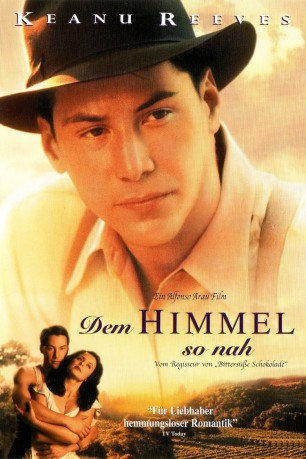
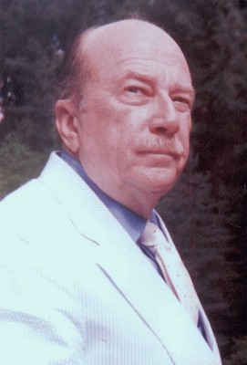

#64 Dem Himmel so nah
Alternativ: A Walk in the Clouds
Auszeichnungen: 1 GoldenGlobes gewonnen
 
 IMDB-Wertung: 6.7 / 10
IMDB-Wertung: 6.7 / 10  Metascore: 54
Metascore: 54 
Der junge Ex-Soldat Paul Sutton auf der Suche nach einem neuen Lebensziel, lernt Victoria Aragon kennen. Sie ist eine schöne junge Frau, die sich auf dem Weg zum Weingut ihrer Familie befindet. Sie erzählt Paul, daß sie schwanger ist und von ihrem Freund verlassen wurde. Damit sie ihrem strengen Vater unter die Augen treten kann, erklärt Paul sich bereit, für einen Tag ihren Ehemann zu spielen. Ihr Vater lehnt Paul ab, da er ihn als Eindringling betrachtet und vermutet, daß an dessen plötzlichem Auftauchen etwas nicht stimmt. Während Paul und Victoria, von allen beobachtet, ein glückliches Paar spielen, wird aus der Maskerade, die nur einen Tag dauern sollte, Ernst. Für beide wird es die große Liebe. Der Haß in Victorias Vater wächst. Als er Pauls Geheimnis entdeckt, löst dies eine Katastrophe aus.
Jahr: 1995
Dauer: 102 Minuten
FSK: 6
Land: USA Studio: 20th Century FoxTonspuren: DTS - ,
Untertitel:
Auflösung: 720p (1280×688) Größe: 4003 MB
Genre: Drama, Liebe
Regisseur:  Alfonso Arau
Alfonso Arau
Drehbuch: Robert Mark Kamen, Mark Miller, Harvey Weitzman, Piero Tellini, Cesare Zavattini
Soundtrack: Maurice Jarre
Darsteller:
 Keanu Reeves als Paul Sutton
Keanu Reeves als Paul Sutton- Aitana Sánchez-Gijón als Victoria Aragon
 Anthony Quinn als Don Pedro Aragon
Anthony Quinn als Don Pedro Aragon Giancarlo Giannini als Alberto Aragon
Giancarlo Giannini als Alberto Aragon Freddy Rodríguez als Pedro Aragon, Jr.
Freddy Rodríguez als Pedro Aragon, Jr. Debra Messing als Betty Sutton
Debra Messing als Betty Sutton Mary Pat Gleason als Bus Driver
Mary Pat Gleason als Bus Driver John Dennis Johnston als Lout #1
John Dennis Johnston als Lout #1-  Macon McCalman als Conductor
- Loren Zitomersky als Ten Year Old Boy
- Julie Guevara als Maid of honor , uncredited
- Angélica Aragón als Marie Jose Aragon
- Evangelina Elizondo als Guadelupe Aragon
- Febronio Covarrubias als Jose Manuel
- Roberto Huerta als Jose Luis
- Juan Jiménez als Jose Marie
- Ismael Gallegos als Jose's Musical Son
- Alejandra Flores als Consuelo
- Gema Sandoval als Maria
- Don Amendolia als Father Coturri
- Gregory Paul Martin als Armistead Knox
- Joseph Lindsey als Lout #2
- Mark Matheisen als Soldier
- Ivory Ocean als Truck Driver
- Fred Burri als Swiss Yodler
- Stephanie Maislen als USO Woman
- Brad Rea als Soldier #2
- Joe Troconis als Man at Gate
- Bret Culpepper als Josh the Ranchhand , uncredited
- Erica Howard als Woman on Bus , uncredited
- Dana Walsh als Swiss Festival Dancer , uncredited
Datei: X:\1995\Dem Himmel so nah (1995, FSK6, 1280x688).mkv seit 02.02.2015
Festplatte: HD 1992-1995
 Es gibt insgesamt 85 Filme in der Gruppe '1995'
Es gibt insgesamt 85 Filme in der Gruppe '1995'